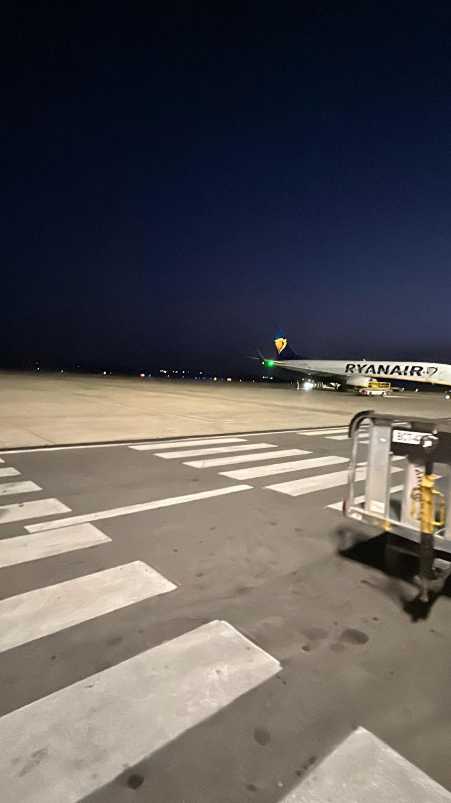

The painted path
Runway and taxiway markings turn the open tarmac into a map. Their bright lines guide aircraft through the dark.
A travel journal · After dark
At night, an airport becomes a small world of its own. Runway markings lead into the distance, lights blink across the tarmac, and a plane waits while the next journey gathers itself.
Step into the moment
A moment in transit
FIELD NOTE 01From the window, the airport feels both busy and still. Ground crew move around the aircraft, small lamps flicker in the distance, and broad white stripes point toward the runway. For a few minutes, there is nowhere else to be.
That pause is part of travelling too. The destination may be far away, but the first memory of a trip can be made right here, under the lights, before the engines begin.
Look a little closer
Runway and taxiway markings turn the open tarmac into a map. Their bright lines guide aircraft through the dark.
Signal lights and distant windows add tiny points of color to an otherwise wide, quiet night.
Before a flight begins, the aircraft rests on the ground. Around it, careful preparations set the journey in motion.
Every journey has a quiet beginning.
Sometimes it is simply a moment on the tarmac, looking out into the night.